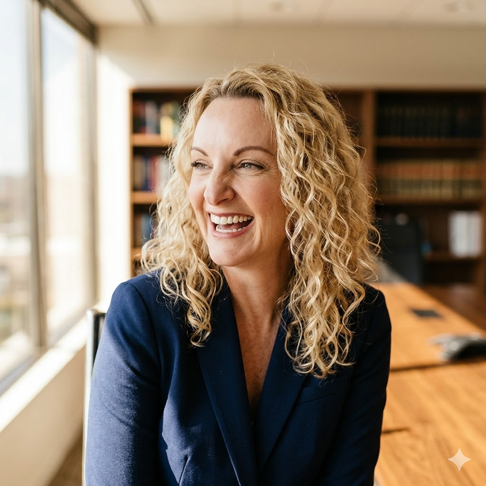

About Us
Principal & Director, Legacy TCP Legal Services

Amy R. Gould, Esq. is a trusts and estates attorney with more than twenty-five years of experience advising individuals, families, business owners, executives, fiduciaries, and family offices on sophisticated estate planning, wealth preservation, tax-efficient wealth transfer, and business succession planning. Throughout her career, she has focused on helping clients develop thoughtful, coordinated strategies that preserve wealth, protect assets, minimize transfer taxes, and facilitate the successful transition of family and business interests across generations.
Throughout her career, Ms. Gould has developed a unique perspective at the intersection of law and wealth management. Unlike many traditional estate planning practitioners whose experience is primarily centered on drafting legal documents, Ms. Gould has spent more than two decades working directly with financial advisory organizations, investment professionals, accountants, insurance advisors, and private client teams to design and implement comprehensive wealth strategies. This multidisciplinary experience enables her to understand not only the legal aspects of estate planning, but also how legal planning must integrate with investment management, tax planning, insurance, business succession, and long-term financial objectives to produce meaningful results.
In 2023, Ms. Gould founded Legacy TCP Legal Services, LLC, the legal division of Legacy Trust and Capital Partners, LLC, based upon the belief that traditional estate planning should evolve into a fully integrated wealth planning process. Her vision was to create a platform where estate planning, tax planning, investment management, insurance strategies, business succession planning, asset protection, charitable planning, and family governance are coordinated as components of one comprehensive legacy strategy. Rather than approaching these disciplines independently, Legacy's collaborative planning model brings together each member of a client's advisory team to develop a unified strategy aligned with the client's long-term personal, family, and financial objectives.
As Principal and Director of Legacy TCP Legal Services, Ms. Gould leads the firm's legal planning division, working closely with Legacy's multidisciplinary professionals to help clients preserve family wealth, prepare future generations for responsible stewardship, and implement planning strategies designed to adapt as family and financial circumstances evolve. Her work frequently involves coordinating sophisticated planning engagements among attorneys, certified public accountants, investment advisors, insurance professionals, valuation experts, business advisors, and family office personnel to ensure that every aspect of a client's planning strategy works together cohesively.
In addition to her work with Legacy Trust and Capital Partners, Ms. Gould serves as Chair of the Estate, Trusts & Wealth Preservation Department at Weiner Law Group LLP. There, she oversees the firm's trusts and estates practice, advising clients on sophisticated estate planning, fiduciary representation, trust and estate administration, wealth preservation strategies, business succession planning, and trust and estate litigation. Her experience representing fiduciaries, beneficiaries, and families through both planning and administration provides practical insight that informs every estate plan she designs.
Prior to founding Legacy TCP Legal Services, Ms. Gould served as in-house counsel to several prominent wealth management organizations, including Corrado Financial Group, Fortis Lux Financial, MassMutual Westchester, True North Financial, and Northwestern Mutual's Westchester Private Client Group. These positions provided the opportunity to work alongside some of the industry's leading financial professionals and reinforced her belief that successful wealth preservation requires collaboration among legal, financial, tax, and insurance advisors.
Ms. Gould is a frequent lecturer for attorneys, financial advisors, accountants, fiduciaries, and wealth management professionals on advanced estate planning, fiduciary law, wealth preservation, business succession planning, trust administration, and multigenerational wealth transfer. She is admitted to practice law in both New Jersey and New York.
Whether assisting families with estate planning, advising business owners on succession strategies, or helping clients coordinate complex wealth planning initiatives, Ms. Gould remains committed to providing practical, integrated solutions that reflect each client's unique values, objectives, and vision for the future.
This commentary reflects the personal opinions, viewpoints and analyses of the Legacy Trust & Capital Partners employees providing such comments, and should not be regarded as a description of advisory services provided by Legacy Trust & Capital Partners or performance returns of any Legacy Trust & Capital Partners client. The views reflected in the commentary are subject to change at any time without notice. Nothing in this commentary constitutes investment advice, performance data or any recommendation that any particular security, portfolio of securities, transaction or investment strategy is suitable for any specific person. Any mention of a particular security and related performance data is not a recommendation to buy or sell that security. Legacy Trust & Capital Partners manages its clients' accounts using a variety of investment techniques and strategies, which are not necessarily discussed in the commentary. Investments in securities involve the risk of loss. Past performance is no guarantee of future results.
All written content on this site is for information purposes only. Opinions expressed herein are solely those of Genesis Financial Group, LLC dba Legacy TCP Advisory Services, and our editorial staff. The information contained in this material has been derived from sources believed to be reliable but is not guaranteed as to accuracy and completeness and does not purport to be a complete analysis of the materials discussed. All information and ideas should be discussed in detail with your individual adviser prior to implementation. Advisory services are offered by Genesis Financial Group, LLC dba Legacy TCP Advisory Services, a Registered Investment Advisor with the SEC.
All written content is for information purposes only. It is not intended to provide any tax or legal advice or provide the basis for your specific financial decisions.
Images and photographs are included for the sole purpose of visually enhancing the website. They should not be construed as an endorsement or testimonial from any of the persons in the photograph.
Genesis Financial Group, LLC dba Legacy TCP Advisory Services is a Registered Investment Advisor registered with the Securities and Exchange Commission (SEC). Registration as an investment adviser does not imply a certain level of skill or training.